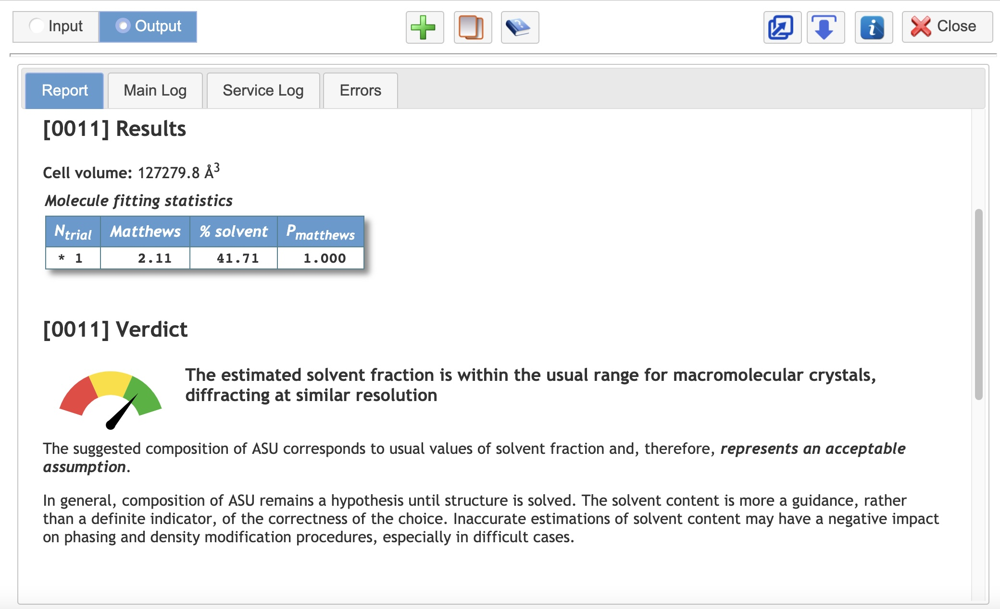
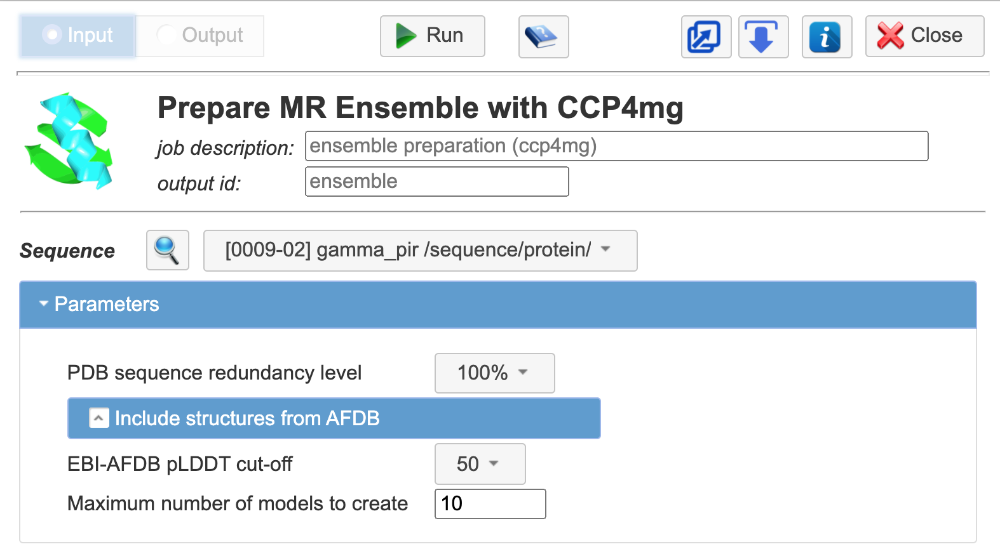

1. Creating Molecular Replacement Search Ensembles with CCP4MG/MrBUMP¶
This tutorial explains how to create the ensembles for Molecular Replacement with CCP4mg graphical interface. We will use the Gamma tutorial example for the demonstration.
Important
Launch CCP4 Cloud through the local installation of CCP4 on your computerfor this tutorial.
1. The sequence data and reflection data were already imported to the “Creating Molecular Replacement Search Ensembles with CCP4MG/MrBUMP” project.
2. The next step is to define Asymmetric Unit content: click add task => go to All task => Asymmetric Unit and Structure revision => Asymmetric Unit Contents. Run the task.
{kind=link}
Every task in CCP4 Cloud produced a report. Some task’s reports come with the verdict (an assessment of the quality task performance).
{kind=link}
3. Once Asymmetric Unit Contents is defined and we are satisfied with result. It is possible to start the MR Ensemble with CCP4mg task: add next job => All task => Molecular Replacement => Prepare MR Ensemble with CCP4mg
{kind=link}
4. Prepare MR Ensemble with CCP4mg task will identify homologues from the PDB and the EBI-AFDB and display them in CCP4mg (takes a couple of minutes).
For AFDB models, you can adjust the pLDDT cut-off. Higher values mean only the most confidently predicted residues are retained in the search models.
- pLDDT > 90: residues are expected to be positioned with a high accuracy. These models should be suitable for any application that benefits from high accuracy (e.g. characterising binding sites).
- 70 < pLDDT < 90 residues are expected to be positioned reasonably well (generally, a good backbone prediction).
- 50 < pLDDT < 70 corresponds to residues modelled with low confidence, which should be treated with caution.
- pLDDT < 50 indicates residues that should not be interpreted. Such scores are a reasonably strong predictor of disorder, i.e. they suggest that the region is either unstructured in physiological conditions, or gets structured only as part of a complex.
It is possible to search only the PDB or EBI-AFDB by unticking the relevant box in the input menu.
Tip
In order to read more abound the task by clicking on task documentation button 
For this tutorial, please make sure that:

- PDB sequence redundancy level set to 100%
- Include structures from AFDB set on
- EBI-AFDB pLDDT cut-off set to 50%
- Maximum number of models to create is 10
{kind=link}
5. Once the task is run, the CCP4mg window will opened on your computer. After a couple of minutes, the results of the MrBUMP sequence-based search should appear in the graphical interface.
Note
the models will have been truncated to better match the target structure by referencing the sequence alignment between the model and the target. The Sculptor application is used to perform the truncation. The resulting search models are structurally aligned.

6. In order to save all that is currently visible in CCP4mg and make it an “ensemble model” go to the File => Save all visible to the CCP4 Cloud
Tip
To save a single model or chosen models, make all other models invisible. To do this in CCP4mg, right-click (or Ctrl-click / Cmd-click on a laptop) on the coloured icon next to the model’s name in the “Display Table” (right-hand panel of CCP4MG window). The icon turns grey and the model becomes invisible in the graphics window. Right-clicking again makes the model visible again.
7. Quit CCP4mg
The created ensemble should appear in the task output window.

8. Created ensembles can be further used in both Phaser and Molrep tasks.
We will use the Phaser for Molecular replacement in this tutorial: add next job => All task => Molecular Replacement => Molecular Replacement with PhaserFor predicted models we recommend setting Similarity to target by rms differences (Å) to 1.2

9. After Phaser, model should be rebuilt to match the target sequence more closely using one of the model building tools present(Buccaneer, Arp/wArp, CCP4Build). Let’s run the CCP4Build task for this project. The model can be inspected in UglyMol window in the task output.
10. Further refinement can be done by Automated refinement and ligand fitting workflow